Special Topics - Final Paper
Name: Pepijn Roos
Student Number: 1651331
Professor: Dr. P. Vierthaler
Special Topics: Final Paper
Date of submission: 29-05-2018
Word count: 3494
The content and results are licensed under a Creative Commons Attribution-ShareAlike 4.0 International License.
A more readable version of the text of this essay is available in the inventory of this visualization: https://github.com/Pepijnroos/pepijnspecial.
Assignment: The main purpose of this course is to develop a digital humanities project and to expand on lessons learned in the core courses. As such, the course will culminate in a 2,500 to 3,500 word research paper and a ten to fifteen-minute presentation. Alternatively, students can develop an online project (with a similar amount of content) or creative visualization project in consultation with the instructor or another advisor. Think about creating something that you can add to a portfolio that will help you as you move forward!
===================================================================
On Friday the 25th of May the main hall of Leiden University was filled with professors, students and interested persons. They were listening to the lecture of Alan Pargas, professor of American culture and history at the same university. This lecture, called 'Promised lands: seeking freedom in the age of American slavery', addressed the topic of slavery and the questions it poses to academics. The multitude of attendants indicated that questions related to slavery, freedom and equal rights are still very popular.
This essay is in two ways related to a modern (academic) debate on slavery. First of all it aims to embed itself in the discussion about the phenomenon of slave transports. The economic, political and demographic impact on Europeans, Americans and Africans is still, 150-200 years after the abolition of slavery on the Western Hemisphere, a fundamental part of societies on both side of the Atlantic Ocean. Secondly, the author of this essay chose to work with digital tools and data. Parts of this digital methodology have been thoroughly studied throughout the minor Digital Humanities, of which this essay is the conclusion. The minor offered outstanding possibilities for this research. Slavery, globalization and digitalization are some of the most debated topics within contemporary humanities. Digitalization has paved a new way of conducting research: It involves changes from the tracing of source material, to data analysis, visualization techniques and the dissemination of results. Thirdly, the author of this essay aims at mastering and experimenting with some of the obtained skills. The main purpose of the assignment is ‘to develop a digital humanities project and to expand on lessons learned in the core courses.’ So besides the mere use of digital tools, my advice and experience are shared throughout the essay, thus contributing to the projects and efforts of future students.
Both regarding the crucial combination of the above mentioned humanities topics and the restricted size of the assignment, this essay touches upon the slave trade to Dutch Guyana (contemporary Surinam and Guyana). Between 1672 and 1973 the Dutch governed this colony. They tried to convince Dutch settlers to move to Guyana, where they could ultimately rule over their own plantations. Lacking a big and affordable workforce to support the plantation economy, the Dutch decided to ship enslaved Africans to Guyana. These Africans, petrified by the horrible circumstances of their enslavement and transportation, soon toiled on the plantations. With time passing, slaves escaped the plantations and formed the so-called 'maroon' settlements in the inaccessible jungle hinterland. Throughout the centuries these plantations, towns and maroon settlements expanded.
To what extent could a combination of traditional literature, digital databases and tools like Excel, Global Information Systems (GIS) and Processing/P5.js visualize the link between Dutch slave transports to Guyana and the growth of the colony? This is the main inquiry of this essay. The author’s goal is to present a new way of conducting research by combining traditional and digital tools. These combinations occur on different levels. Foremost, the combination of digital and traditional methods creates the foundation for this research, which is partly written, partly digitalized. Besides that, using Processing/P5.js offers a rich ‘toolkit’ which enhances currently existing digital visualizations of slave trade. Finally, using the GUIDE principles, the author is seeking for a way to share his method and results to a broader audience. By providing accessible research results, Digital Humanities can present itself with a profound new way of data processing and dissemination. Not by the rejection of traditional research, but by cooperation, this position can be attained.
The core of this essay consists of three parts. In the first part the current historiography of Dutch slave trade to Guyana is discussed. What (digital) projects and research have been produced in the past? How could this essay contribute to this historiography. The second part examines the data, tools and methodology used for the author's visualizations and results. The final part obviously focuses on these results. What could be learned from the results and how could historians analyze these modern visualizations?
Historiography
This essay is inspired by a variety of articles and books. Moreover, it tries to embed itself into the debate proposed by the authors of this literature. They have mostly dealt with the development of the Guyana colony and the shipment of slaves. Debates on slavery are part of a bigger discussion about globalization. The idea of globalization focuses on the spread of goods, people and ideas across the world. Towards the end of the 20th century the framework of globalization became more prominent in academic debates. Slavery was a very essential part of historic globalization: 12 million Africans were forcibly displaced to the American continent between the 15th century and the late 19th century. Products like sugar cane, coffee and cotton dominated international and local markets and the social system of a plantocracy, based on racism and hierarchy, was adapted across the Western Hemisphere.
Within Dutch historiography the colonies in Indonesia were more prominent than their western counterparts. In 1990 Johannes Postma shed light on the important and relatively neglected role Dutch traders and planters played in Africa and Guyana. He estimated that Dutch slavers transported roughly 534.000 slaves to Guyana and other colonies. This nearly equals the total amount of 600.000 slaves who were transported to ports in the United States of America. In multiple articles Postma elaborated on his work and the database he created. He proved that the Dutch held a vital position in the maintenance of slavery in Guyana.
More recently, authors like Karwan Fatah-Black have criticized the trans-Atlantic quantitative approach of Postma. While conducting qualitative research on other goods and products they claimed that the local trade between colonies was as important, or even more important, for the maintenance of the Guyana colony. Although the Dutch enforced a mercantilist system and banned foreign ships, English vessels from Barbados were vital for the development of the colony. Fatah-Black rightfully pointed to this fact, but there is a vital flaw to this theory. In the United States the slave population expanded rapidly by natural reproduction. The gruesome conditions at the tropical plantations in the Guyana jungle had a major impact on the mortality rate of slaves. Especially slaves who had to toil on the sugar plantations suffered from the wounds they inflicted upon themselves while working. A constant import was vital to upheld an efficient labor force. Based on this presumption the author of this essay chose to visualize the criticized, number-based, import of slaves by trans-Atlantic shipment. As argued, this approach could teach us some new lessons regarding slave imports to Guyana.
Some minor articles are also related to the content of this essay. Especially those of Andra Thakur and Alvin Thompson. Thakur devoted an anthropological article to the difference of 'ethnical' governance between British Guyana and Dutch Surinam. The sheer size of slave imports which affected British Guyana around 1800 - also shown in my visualization - supports Thakur's theory of a sudden and forced acculturation of British 'culture' and language by these slaves, while slaves in Surinam were gradually imported and deliberately excluded from an integration process. Thompson devoted his attention to the maroon communities of Surinam. The growth of these communities can also be recognized in the maps and visualizations.
Data, tools and methodology
What data, tools and methods did the author use to contribute to the above mentioned debate? First of all, digital and archival sources had to be obtained. The archival research is based on sources from the colonial authorities. These archives are stored in the National Archives in The Hague. The archival sources harbor a great variety of research materials: maps, testimonies, military reports and official documents. Ship transports were not included, which made the traditional archival sources less important for the current digital research. The main dataset for this research was provided by the Slave Voyages Project. This project was launched in the late 1960s by American scholars from multiple universities. For 50 years already data surrounding this topic has been gathered. The above mentioned Johannes Postma contributed by adding his data on Dutch slave transportation. From 2006 on a website is being hosted by Emory University and funds from the W.E.B. Du Bois Instute for Afro-American research at Harvard University. In total an estimated 30.000 detailed ship movements are part of the database. This project only makes use of the 'mere' 1.167 individual ship movements to regions within Dutch Guyana: Paramaribo, Berbice, Essequibo and Demerara.
To plot and convey the data in a proper way, basically two elements for a visualization were essential: maps on which to plot the shipment and the tools which would enable the plotting of these ships. The maps were retrieved from the David Rumsey Map Collection. David Rumsey, one of the most renown American cartographers, has gathered and digitalized more than 150.000 historical maps since he started creating a database 30 years ago. For this essay, 4 maps were used:
- George Sanson, Guyana Coast (London 1656).
- Henry Popple, Map of Guyana (London 1733).
- William Faden, The Coast of Guyana (London 1783).
- John Pinkerton, The Caracas (London 1810).
These maps laid the foundation for four visualizations. These visualizations were defined and chosen by time and not by region! 'Sanson' is used for the period 1658-1713, 'Popple' for 1714-1756, 'Faden' for 1757-1793 and 'Pinkerton' for 1794-1825. The maps were loaded and georeferenced into QGIS 3.0.0. and placed over a layer made out of shape files, which represents contemporary countries, oceans and boundaries. This made it possible to discern the modern day boundary of British Guyana and Dutch Surinam. However, the maps are often distorted, because the creators of the map likely never visited the region themselves, accounts of the interior were very scarce and measuring tools were flawed. Therefore esthetically a trade-off occurred between practicality and the beauty of old maps.
During the next phase, the maps were imported in software like Processing and P5.js. Paul Vierthaler provided the base code for the movement of ships. With this code shipping movement could be plotted on the maps. Next to this, a legend, title, time tracker and source reference were added. P5.js. was extremely useful compared to Processing, as the former created maps which could immediately be visualized in a html-file on GitHub Pages. The maps show the annual arrival of ships to their destined port. The main goal of this visualization is to show the intensity of the shipping routes along time and the dispersal of ships along the harbors.
Next to the maps, two supporting types of graphs were produced. The 'line graphs' visualized the total amount of imported slaves per decennium. Individual line graphs have been created for each map. The data for these imports could not be discovered in the Slave Voyages Project database, therefore the author chose to use other data provided by Johannes Postma. This data only reaches until the end of Dutch slave imports (1803), as Postma only created a database for Dutch shipping. This caused the absence of a line graph in the 'Pinkerton' visualization. The base code for the line graphs was provided by Mike Bostock.
The second type of supporting graphs is constituted by 'column graphs', which represent an overview of the total amount of individual shipments by country of origin to the different harbors. These graphs are once again based on the Voyages database and are visualized with basic Excel functions. The graphs are centered on the individual ports: Surinam/Paramaribo, Berbice, Demerara and Essequibo. This decision was made, as in this setting all the visualizations very clearly showed political changes over time. The political and economical transitions which occurred towards the end of the 18th century would otherwise only be visible in two of the visualizations (Faden - Pinkerton), while the other two would mainly show Dutch shipment. A visualization based on port was thus preferred regarding the column graphs.
Finally, the dissemination of the results should be discussed. While traditional bachelor essays hardly ever make it to the bigger audience, the author decided to publish his results on a GitHub Page. This digital platform enables individuals to host, build and publish (simple) web pages. Commenting on other projects is also fairly easy. The author realizes his page is esthetically not the best, but this was never the focus of his project. Besides that, the chance of actually being found on the internet is small. However, by digitally publishing datasets and visualizations, the author obeys to the FAIR principles. Working with these principles, he made the project more findable, accessible, interoperable and reusable. The content and results are licensed under a Creative Commons Attribution-ShareAlike 4.0 International License, which ensures the adaption of the here used techniques, data and methods.
Results
With the combination of historiographic literature, datasets, a sound methodology and a GitHub Page as platform of dissemination, some interesting visualizations have been produced. In this section, all results and their relation to the literature are systematically discussed. The results and annex can be found on my GitHub Page. Here the visualizations are shown in full detail. A link can be found on page 1 of this essay.
The earliest of the visualizations is the visualized map of George Sanson (1656-1713). The line graph indicates the initial growth of slave transports. The Dutch acquired the colony in exchange for New-York throughout the 1660s. Especially Surinam rapidly expanded after this period. Essequibo expanded modestly, while Berbice was founded late. The column graphs (see fig. VII-X ) show that the last foreign ship arriving is a French ship in 1683. Afterwards, shipment is completely dominated by the Dutch. The visualized map supports these figures. Essequibo is, just as in the line graph, the first colony to receive slaves from Africa. After 1664 Surinam rapidly took over the role of main slave trade hub in the region. Berbice is only a minor third port, scarcely receiving any slave ships. The 1660s and 1700s display some peaks in the intensity of slave shipments. However, this intensity is nothing compared to some decades in the 18th century. Finally it is interesting to note that Sanson's map features a lot of presumed locations of native settlements and clans. Neither maroon settlements, nor European settlements located in the interior are present.
Shifting our focus to the mid-18th century, Henry Popple's georeferenced Map of Guyana (1714-1756) comes to the fore. The line graph indicates a rapid growth of Surinam. Especially the 1740s was a decade of intensification of slave transports. This probably had to do with a growing demand of products like sugar and coffee. Besides that, the 1740s were a peaceful period, in which trade could flourish. During this time period Berbice replaced Essequibo as the second port of the colony. Especially the 1730s are a period in which a steady import of African slaves ensured the maintenance of Berbice. The column graph reinforces the Dutch mercantilist policy, with only one English ship arriving at Essequibo in this time period. Popple included the first Dutch settlements on his map. New towns like 'New Zeeland' and 'New Middelburg' indicated the growing Dutch presence. Interesting is the text 'Dutch colony' near Berbice.
However, the true scale and intensity of Guyana salve trade is represented in the third visualization. William Faden's The Coast of Guyana (1757-1793) is the most prominent of the visualizations. There are multiple reasons for this. The line graph already points out two interesting trends. First of all, after a peak of slave imports had been reached the slave trade to Surinam dropped drastically. Secondly, Demerara introduced itself as a new port. Although this port still played a minor role in this period, the foundation had been laid for future expansion. The decay of Dutch slave trade was caused by the defeat of the Dutch during the Fourth Dutch-Anglo War (1780-1784), which resulted in the destruction of the Dutch fleet and the subsequent invasion and annexation by French Republican forces in 1793, which put the Netherlands in a state of nearly constant war with the British. Looking at the column graph, the destruction of the Dutch fleet resulted in a period in which at first French and American traders took over the import of slaves. However, they were soon replaced by the British. They heralded the end of the Dutch as leading slave traders. The georeferenced map indicates the extreme level to which slave trade had risen during the late 18th century, especially the 1760s show a peak. Some new landmarks are also indicated for the first time. Fort Nassau for instance is mentioned in the interior and some new Dutch coastal towns are mentioned. However, maroon communities are still absent on the map.
This changes when looking at the final visualization. Although this visualization, John Pinkerton's The Caracas (1794-1825), lacks a line graph, the author opted to retain the map. The map shows the foundation of maroon communities and their discovery by the colonial authorities. Indicated are the territories in which 'runaway negroes' and 'revolted negroes' presumably live. It is logical that maroon communities came into existence during the decades after the peak of the slave trade. The communities were large and depended on a sizeable force of (fe)males who could hunt and defend the encampment. Hostile Dutch and Indian patrols constantly threatened the maroons. A part of the generation that arrived in 'Faden's period' had thus likely established itself in the interior. The visualization shows one last dramatic period of slave trade. Between the decay of the Dutch and the abolition of slave trade by the British authorities (1807) a dramatic increase in slave transports happened. In this 15 years the new British planters tried to reinvigorate the import of slaves for the establishment of a profitable colony. The year 1801 is a stunning example. In this year 63 ships arrived in the ports of Demerara, Paramaribo/Surinam and Berbice. After the English ban on the import of slaves, a couple of Dutch and French slave ships arrived in Surinam. However, a new period of slave transports would not occur again. The excessive import of slaves by the English to (mostly) Demerara in this period would result in a big slave revolt in 1823. One decade later slavery was actively curtailed and the English slaves slowly integrated into a free Guyana society. The Dutch slaves were manumitted later and were not encouraged to blend in with the European and native population. These facts are not represented in the visualizations. However, they were important results of the events and phenomena visualized here.
Conclusion
This essay focused on the Dutch slave trade to Guyana between 1658 and 1825. Since the 1990s a substantial debate developed on how to interpret this trade and the growth of the Dutch colony. Although the quantitative 'numbers' approach has been criticized in the past, this essay produced digital visualizations to show the relevance of digital tools. With (online) databases, processing tools and GitHub Pages the individual shipment and the numbers of slave import have been made visible and accessible for analysis. The essay centered on the following question: To what extent could a combination of traditional literature, digital databases and tools like Excel, Global Information Systems (GIS) and Processing/P5.js visualize the link between Dutch slave transports to Guyana and the growth of the colony?
The results of this pioneering project are promising. The intensity of the shipment seems to correlate with events related to the growth and decline of the colony. The ratio of Dutch and foreign ships also clearly shows a certain governmental policy and geopolitical changes. The maps themselves scarcely show the growth of the colony. Therefore the column and line graphs contributed massively to the analysis of slave shipment. However, there are still some flaws. The slave trade was only one aspect of the colony. There were other, non-involved, inhabitants in the colony. A wide variety of goods was traded for. Contact with neighboring colonies and countries contributed to the development of Guyana. Besides that, the National Archives harbor a great deal of interesting study material which, when digitalized, could contribute to a digital interpretation of slavery. Think about maps of plantations, accounts of traders, military reports and governmental communication with the Dutch Republic and neighboring colonies. Network analysis and topic modeling could lay the foundation for interesting future projects.
This project merely focused on slave shipment to Guyana in a specific period of time. Mastered skills are shown, an academic paper is written and the information is disseminated on the internet. A combination of traditional conventions and innovative ‘digital’ tools constituted an essential part of this final project. By adapting this combination in the future, a 'Digital Humanities' student could distinguish him- or herself from traditional colleagues.
It would be amazing if future professors, like Pargas, would host lectures regarding slavery in the main hall of Leiden University. It would be even better when they would include the wide range of possibilities that digital tools and methods offer within this research field.
=========================================================Annex============================================================
Links to the visualizations (maps and line graphs), base code provided by P.A. Vierthaler and M. Bostock.
Sanson: 1664-1713
Popple: 1714-1756
Faden: 1756-1793
Pinkerton: 1793-1825
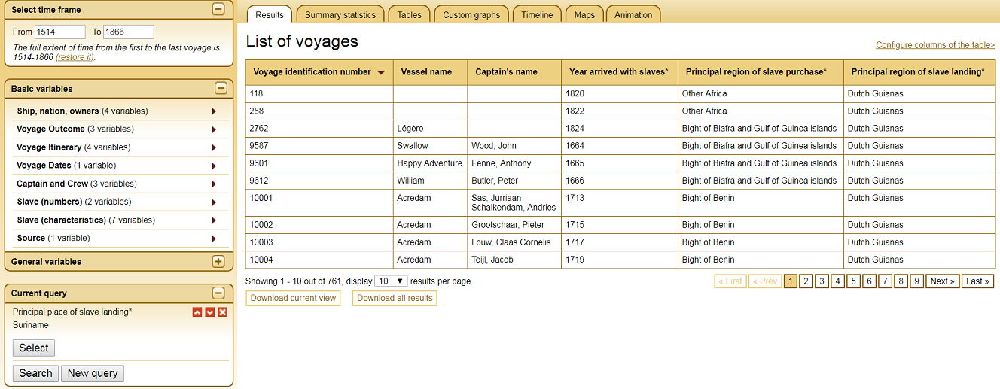
Figure I: Slave Voyages Database, 'Screenshot of the site', http://www.slavevoyages.org/, as accessed on 19-04-2018.
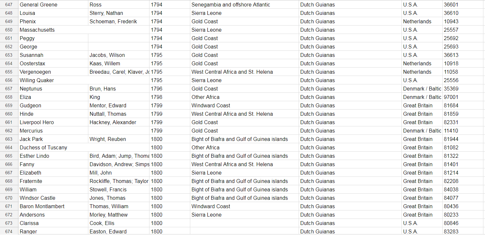
Figure II: P. Roos, 'Part of the imported database created by the author', based on: Slave Voyages Database, http://www.slavevoyages.org/, as accessed on 19-04-2018.
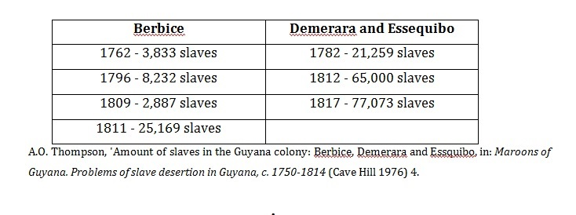
Figure III: A.O. Thompson, 'Amount of slaves in the Guyana colony: Berbice, Demerara and Essquibo', in: Maroons of Guyana. Problems of slave desertion in Guyana, c. 1750-1814 (Cave Hill 1976) 4.
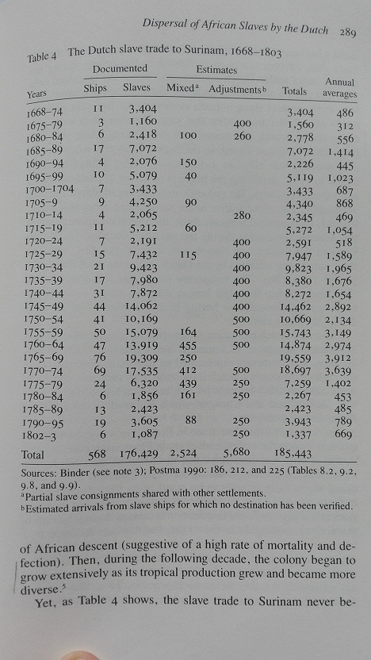
Figure IV: J. Postma, 'The Dutch slave trade to Surinam, 1668-1803', in: J. Postma, 'The dispersal of African slaves in the West by Dutch slave traders, 1630-1803', in: J.E. Inikori and S.L. Engerman ed., The Atlantic Slave trade. Effects on economies, societies, and peoples in Africa, the Americas and Europe (London 1992).
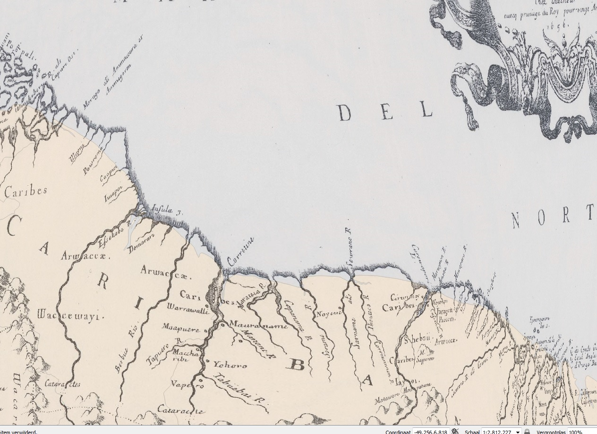
Figure V: P. Roos, 'G. Sanson's Guyana Coast (London 1656) map georeferenced in QGIS 3.0.0 on the modern day coastline of Guyana and Surinam.
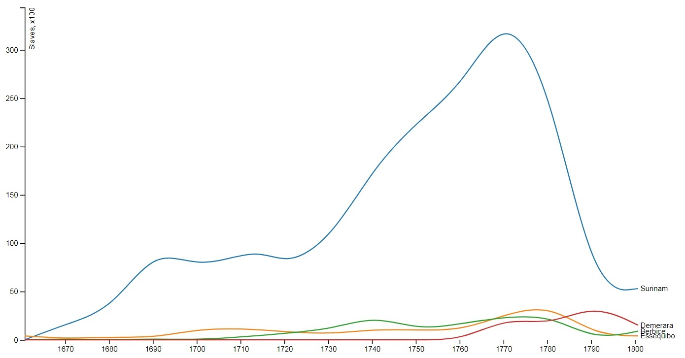
Figure VI: P. Roos, 'Graph representing the amount of slaves transported to the colonies of Surinam, Demerara , Berbice and Essequibo, 1658-1803, dots per decennium connected by a line, based on: data from J. Postma, 'The dispersal of African slaves in the West by Dutch slave traders, 1630-1803', in: J.E. Inikori and S.L. Engerman ed., The Atlantic Slave trade. Effects on economies, societies, and peoples in Africa, the Americas and Europe (London 1992). Base code provided by: M. Bostock, 'Multi-series line chart', https://bl.ocks.org/mbostock/3884955, as accessed on 27-5-2018.
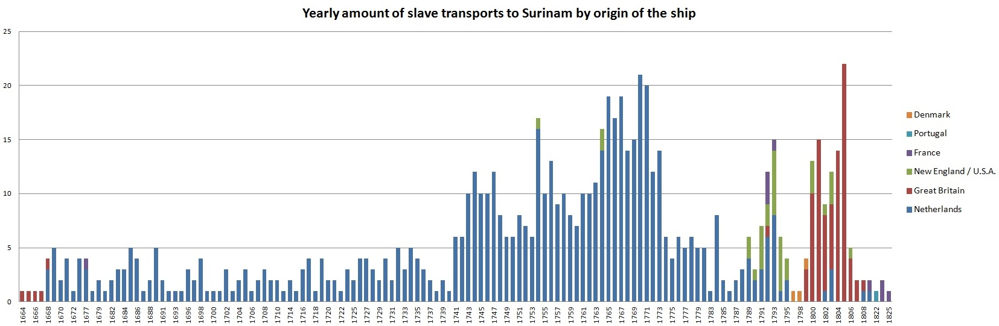
Figure VII: P. Roos, 'Graph representing the yearly amount of slave transports to Surinam by origin of the ship between 1664-1825', based on: Slave Voyages Database, http://www.slavevoyages.org/, as accessed on 25-05-2018.
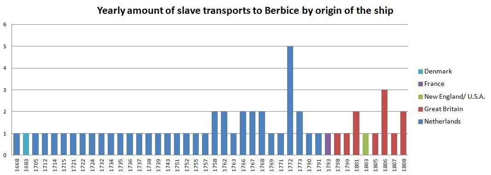
Figure VIII: P. Roos, 'Graph representing the yearly amount of slave transports to Berbice by origin of the ship between 1668-1808', based on: Slave Voyages Database, http://www.slavevoyages.org/, as accessed on 25-05-2018.
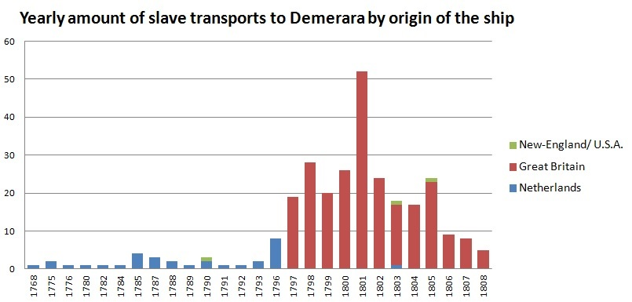
Figure IX: P. Roos, 'Graph representing the yearly amount of slave transports to Demerara by origin of the ship between 1768-1808', based on: Slave Voyages Database, http://www.slavevoyages.org/, as accessed on 25-05-2018.
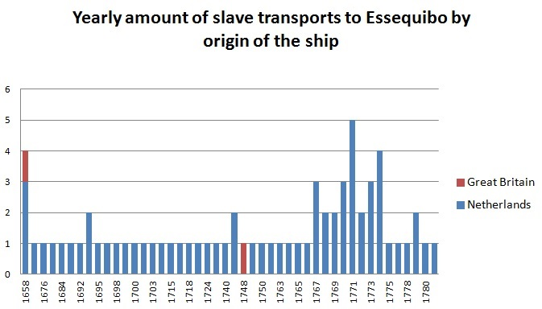
Figure X: P. Roos, 'Graph representing the yearly amount of slave transports to Essequibo by origin of the ship between 1658-1781', based on: Slave Voyages Database, http://www.slavevoyages.org/, as accessed on 25-05-2018.
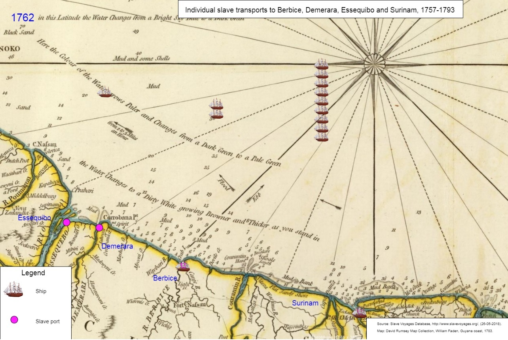
Figure XI: P. Roos, 'Screenshot of the PJ.5s visualization representing the arrival of slave ships in Surinam, Berbice, Demerara and Essequibo between 1757-1793'. Base code provided by: P. A. Vierthaler.